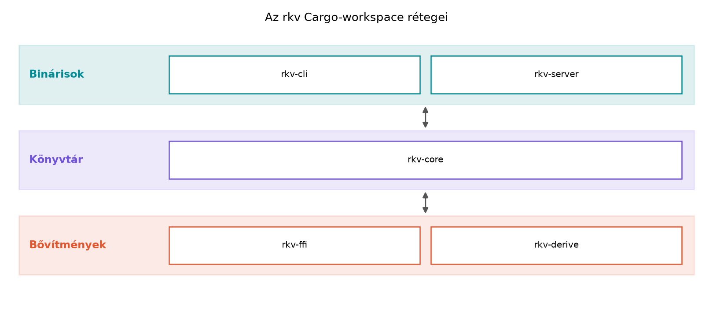

A könyv célközönsége nem az a fejlesztő, aki most ismerkedik a
programozással, hanem az, aki már több ezer sornyi modern C++-t írt:
ismeri a RAII-t, a mozgatási szemantikát, a unique_ptr és
shared_ptr belső működését, a sablonokat, az STL-t, a
lambdákat és a std::thread alapú párhuzamosságot. Éppen ez
a tudás jelenti a csapdát is: Rustban a legtöbb C++-reflex értelmezhető,
de gyakran éppen az ellenkezője az idiomatikus megoldás. A C++-ban az
alapértelmezett másolás, az aliasolt, módosítható állapot, a
nullptr mint üres érték, a kivételek és az implementációs
öröklés mindennaposak; a Rust ezeket a forrásait a legtöbb hibának
szándékosan eltávolítja. Ez az útmutató arra készít fel, hogy a
C++-tudásodat ne a nyelv „legyőzésére”, hanem a Rust-modell megértésére
használd. Az rkv mintaprojekt pedig ugyanazt a tanulási utat járja be,
mint egy valódi C++-ról Rustra migráló szolgáltatás: CLI-ből könyvtárrá
fejlődik, hibakezeléssel, perzisztens tárolóval, párhuzamos tesztekkel,
hálózati szerverrel, végül C++-ból hívható FFI-réteggel.
Definíció. A könyvben a továbbvitt eredmény olyan típus, trait, modul, függvény vagy mintaprojekt-döntés, amelyet az alfejezet kidolgozásakor pontosan meghatározott néven és viselkedéssel hozunk létre az rkv workspace-ben vagy a labor-könyvtárban, és amelyre a későbbi alfejezetek a megadott néven hivatkoznak. Ha egy későbbi alfejezet mégis módosítja a korábbi döntést, akkor a módosítás és annak indoklása maga is tananyag; a refaktorálás nem hiba, hanem a fejlődés természetes része.
Szabály. A könyv teljes tanulási íve egyetlen
végigvitt mintaprojektet épít: az rkv kulcs–érték
tárolót. Minden labor ennek egy darabját készíti el vagy dolgozza át. A
labor-könyvtár a ~/rust-labor/ könyvtár, az rkv
Cargo-workspace a ~/rust-labor/rkv/ alatt található. A
workspace tagjai:
rkv-core – könyvtár crate, a tároló, a parancsok, a
hibatípusok és a Storage trait;rkv-cli – bináris crate, a parancssori felület clap
alapú argumentumelemzéssel;rkv-server – bináris crate, a tokio TCP-szerver és a
szöveges protokoll;rkv-ffi – C ABI-t exportáló könyvtár, amelyet
C++-oldalról lehet hívni;rkv-derive – procedurális makró crate, kiegészítő
derive implementációkkal;cpp-client – C++ klienskód a
~/rust-labor/rkv/cpp-client/ alatt, CMake-tel.Szabály. A C++-ismeretek három csoportba sorolhatók:
const-helyesség
alapgondolata, a memóriamodell, az atomikus műveletek és a nulla
költségű absztrakció fogalma. Ezek a Rustban is hasonlóan működnek, bár
szintaktikailag és a kényszerítő szabályokban eltérhetnek.null, nincs kivétel, nincs implementációs
öröklés, nincs függvénytúlterhelés; a fordítási hibák nem akadályok,
hanem a nyelv tanításának eszközei.Send/Sync automatikus trait-ek, az async/await
a Future típussal, a Pin, a
no_std Rust és a makrórendszer ebben a formában.A két nyelv filozófiáját egyetlen kódpárral szemléltetjük. C++-ban a másolás gyakran implicit, és a hibás kód csak futásidőben derül ki:
#include <vector>
void take_copy(std::vector<int> v) { /* v másolata */ }
int main() {
std::vector<int> data{1, 2, 3};
take_copy(data); // C++: data még érvényes, mindkét vektor létezik
// data tovább használható, de a két vektor memóriája duplikált
}Rustban ugyanez a függvényhívás alapértelmezés szerint
mozgat, ezért a data többé nem használható a hívás
után:
fn take_owned(v: Vec<i32>) { /* v tulajdonba került */ }
fn main() {
let data = vec![1, 2, 3];
take_owned(data); // Rust: data mozgatva, a kupacadat nem másolódik
// println!("{data:?}"); // hibás: data érvénytelen, use of moved value
}A különbség a tulajdonjog (ownership) szabályából fakad: Rustban minden értéknek pontosan egy tulajdonosa van, és a függvényhívás a tulajdonjogot átadja. A fordító ezt statikusan ellenőrzi, míg a C++-ban a másolás futás közben történik, és a fejlesztő felelőssége, hogy elkerülje a felesleges másolást vagy az érvénytelen fordítást.
A könyv egyes részei az rkv projekt más-más mérföldkövét valósítják meg. A tanulási ív a következő:
~/rust-labor/ könyvtár és a Cargo-workspace is itt jön
létre.rkv-core
első vázlata, a Command enum és a
Get/Set parancsok.Store típusba a kulcs–érték adat, és hogyan adjuk kölcsön
anélkül, hogy a borrow checkiert „kijátszanánk”.Result és a ? operátor, a saját
Error enum, a Storage trait, a
MemStore és FileStore implementációk, a
tesztelés. Itt válik az rkv valódi, újrahasznosítható könyvtárrá.Storage traitet szálbiztossá tesszük, az Arc
és a Mutex segítségével megosztjuk a tárolót, majd a tokio
szerverrel hálózati protokollt adunk hozzá.rkv-ffi a C ABI réteget, az
rkv-derive a makrókat, a cpp-client a
C++-oldali meghívást mutatja be.A labor-könyvtár létrehozása egyszerű, de a teljes workspace beállítása a Eszközlánc: rustup, cargo, rustfmt, clippy, dokumentáció és Az rkv mintaprojekt indítása: Cargo-workspace és első CLI alfejezetben történik. Itt csak a várható szerkezetet mutatjuk be:
mkdir -p ~/rust-labor/rkv
cd ~/rust-labor/rkv
# Ezt követően a cargo new és a Cargo.toml szerkesztése az r003-ban.A workspace rétegszerkezete:

Az alapértelmezett másolás feltételezése.
C++-ban egy std::vector függvényargumentumként való átadása
általában másolatot készít; Rustban a Vec<T> mozog.
Ha a C++-os reflexből kiindulva Clone-t hívsz mindenhol,
akkor gyakran felesleges allokációt és a tulajdonjogi modell
megkerülését éred el. A helyes megoldás a borrow, az
&-referencia, amikor csak olvasásra van
szükség.
Az aliasolt, módosítható állapot megszokása.
C++-ban teljesen természetes, hogy két mutató ugyanarra a módosítható
objektumra mutat, és a fejlesztő felelőssége a szinkronizáció. Rustban a
borrow checker ezt fordítási időben tiltja, hacsak nem használunk
Mutex-et, RefCell-et vagy atomikus típusokat.
A Rc<RefCell<T>> gyakori menekülőút, de a
túlhasználata a C++-os „mindent megosztok” gondolkodás jele; Rustban
gyakran jobb a tulajdonjogot átrendezni.
A null mint hiányjel. A C++-ban a
nullptr gyakran jelenti azt, hogy „nincs érték”, de ez
rengeteg futásidejű szegmenshibát okoz. Rustban a null
egyszerűen nincs a biztonságos kódban; a hiányt az
Option<T> típus fejezi ki, és a match,
if let, let else kényszeríti a programozót a
None ág kezelésére.
A kivételek helyettesítése a Result
típussal. C++-ban a hibákat kivételekkel dobjuk, és a hívó
dönti el, hol kapja el. Rustban a hiba a Result<T, E>
típus, és a ? operátor expliciten továbbítja. A
unwrap() / expect() hívások a fejlesztői
kényelem eszközei, de könyvtári kódban kerülendők, mert panikot
okoznak.
Lefordul-e, és miért? (Fogalmi kérdés) Döntsd el, hogy a következő C++-kód Rust-megfelelője lefordulna-e, és indokold a válaszod anélkül, hogy lefuttatnád:
#include <memory>
void take(std::unique_ptr<int> p) {}
int main() {
auto p = std::make_unique<int>(42);
take(std::move(p));
*p = 7; // C++: futási hiba, ha p nullptr
}Mi lenne a Rust-megfelelő? Milyen hibát adna a fordító?
C++-kód átírása idiomatikus Rustra. A következő
C++ osztály egy egyszerű számlálót valósít meg. Írd át Rustra úgy, hogy
a value soha ne lehessen null, és a mutáció
explicit legyen:
class Counter {
int* value;
public:
Counter() : value(new int(0)) {}
~Counter() { delete value; }
void increment() { ++(*value); }
int get() const { return *value; }
};Implementációs feladat az rkv-ban. Hozd létre a
labor-könyvtárat a ~/rust-labor alatt, és hozd létre az
rkv mappa vázát. Írd le, milyen mappákat és fájlokat hoznál
létre a workspace tagjaihoz. (A tényleges cargo new
parancsok az rkv mintaprojekt indítása:
Cargo-workspace és első CLI alfejezetben kerülnek sorra, itt a
tervezés a feladat.)
Hibajavítás / tervezési döntés. Tegyük fel, hogy
a Storage trait kezdeti definíciója így néz ki:
trait Storage {
fn get(&self, key: &str) -> Option<Vec<u8>>;
fn set(&mut self, key: String, value: Vec<u8>);
fn delete(&mut self, key: &str);
}Milyen probléma merülhet fel, ha a get
&self-et, a set viszont
&mut self-et használ? Hogyan lehetne a trait-et
szálbiztosan megosztani a Mutex, RwLock, csatornák
és a megosztott rkv alfejezetben? Fogalmazd meg a tervezési döntést,
és indokold.
A C++-kód a std::move után a p-t
használja, ami futási hiba. Rustban a mozgatás (move) fordítási időben
érvényteleníti a változó használatát:
fn take(p: Box<i32>) {
// p tulajdonba került
}
fn main() {
let p = Box::new(42);
take(p);
// *p = 7; // hibás: value moved here
}A hiba a Rustban a mozgatás utáni használat (error E0382,
borrow of moved value). A C++-ban a p továbbra
is érvényes, de nullptr-t tartalmazhat; a Rustban a
mozgatás statikusan garantálja, hogy az eredeti változó nem
használható.
A Counter idiomatikus Rust-megfelelője nem használ
Box-ot, mert a value egyszerűen
i32 lehet, nem szükséges heap allokáció:
struct Counter {
value: i32,
}
impl Counter {
fn new() -> Self {
Self { value: 0 }
}
fn increment(&mut self) {
self.value += 1;
}
fn get(&self) -> i32 {
self.value
}
}A C++-ban a value pointer azért volt, mert a dinamikus
allokáció a RAII-t demonstrálta; Rustban a value egyszerűen
a struct része, a mutációt az &mut self metódus
biztosítja, és nincs null vagy memóriaszivárgás.
A labor-könyvtár létrehozása:
mkdir -p ~/rust-labor/rkv
cd ~/rust-labor/rkvA tervezett mappák és fájlok:
rkv-core/ – Cargo.toml,
src/lib.rs, src/command.rs,
src/error.rs, src/storage.rs,
src/store.rs;rkv-cli/ – Cargo.toml,
src/main.rs;rkv-server/ – Cargo.toml,
src/main.rs;rkv-ffi/ – Cargo.toml,
src/lib.rs;rkv-derive/ – Cargo.toml,
src/lib.rs;cpp-client/ – CMakeLists.txt,
main.cpp.Ezek a fájlnevek a későbbi alfejezetekben is megjelennek, a továbbvitt eredmények hivatkozási alapjai.
A get &self-et, a set
viszont &mut self-et használ. Ez önmagában nem hiba, de
ha Arc<dyn Storage>-t szeretnénk megosztani több szál
között, akkor a set miatt &mut kell, ami a
Arc-ból nem adható át egy másik szálra anélkül, hogy a
dyn Storage trait-objektum Sync legyen. A
dyn Storage alapból !Sync, mert a
&mut self metódus nem biztosítja a szálbiztosságot. A
megoldás a Mutex, RwLock, csatornák és a megosztott
rkv alfejezetben: a Storage traitet nem szálbiztossá
tesszük, hanem a tárolót
Arc<Mutex<dyn Storage>>-ba csomagoljuk. A
Mutex Sync-et ad, így a
&mut self metódusok belülről, a lock védelme alatt
hívhatók. Ez a tervezési döntés: a Storage trait maradjon
egyszálú, a szálbiztosságot a köré épített Arc +
Mutex biztosítsa.
A könyv modern C++-tudású fejlesztőknek tanítja a Rustot, a
C++-reflexek tudatos újraértelmezésével. A RAII, az értékszemantika és a
generikus programozás átvihető; a másolás, az aliasolt állapot, a
null, a kivételek és az öröklés viszont újratanulandó. A
tananyag egy végigvitt mintaprojektet, az rkv
kulcs–érték tárolót építi a ~/rust-labor/rkv/
Cargo-workspace-ben. A tagok: rkv-core,
rkv-cli, rkv-server, rkv-ffi,
rkv-derive és a cpp-client. A mérföldkövek a
könyv ívét követik: CLI-váz, core-könyvtár, hibakezelés,
Storage trait, párhuzamosság, tokio-szerver, FFI. A
továbbvitt eredmények elve biztosítja, hogy minden
alfejezet a korábbiak pontos típusaira, neveire és döntéseire épít. A
labor-könyvtár és a workspace tényleges létrehozása a Eszközlánc: rustup, cargo, rustfmt, clippy,
dokumentáció és Az rkv mintaprojekt indítása:
Cargo-workspace és első CLI alfejezetben történik.
Ebben a kérésben nem állt rendelkezésre webes keresőeszköz, ezért a
fenti tartalom a Rust nyelv stabil, a szerző által ismert szabályaira
támaszkodik. A Rust kiadások (edition 2021/2024) és a crate-verziók
(clap, thiserror, anyhow, tokio, serde stb.) pontos száma, valamint a
hibakódok szövege verziófüggő, ezért azokat a fejlesztés előtt a
rustc kiadott hibaüzeneteivel és a docs.rs
dokumentációjával ellenőrizni kell. A jelen alfejezetben bemutatott
kódok szándékosan leegyszerűsítettek, a teljes, lefordítható változatok
a későbbi alfejezetekben találhatók.